Applications
Kept on this device only; nothing is uploaded. Export backup keeps a copy or moves it to another device.
Today's plate is being prepared…

Kept on this device only; nothing is uploaded. Export backup keeps a copy or moves it to another device.